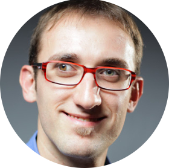
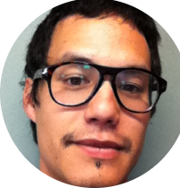
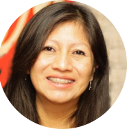
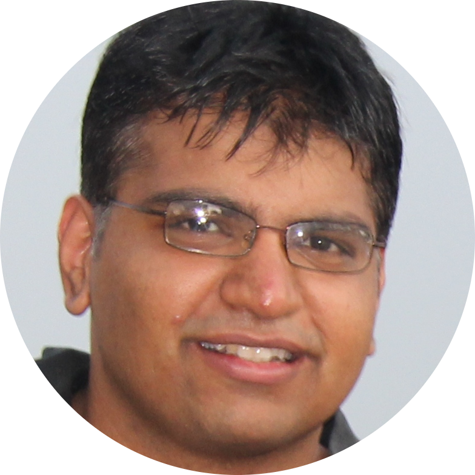
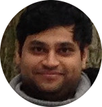

Research Team

Professor at EPFL and Head of the Social Computing Group at Idiap.

Postdoctoral researchers

Research Team |
||
|---|---|---|
|
Professor at EPFL and Head of the Social Computing Group at Idiap.
|
||
Postdoctoral researchers |
||
|  |
|
|
|  |  | |
Doctoral students |
|||
|---|---|---|---|

|
 |  | 
|
|
|
|
|
| Trinh-Minh-Tri Do. Data Scientist, Gianty, Vietnam |
|
|
| Umut Avci. Lecturer, Izmir University of Economics, Turkey |
| Aleksandra Cerekovic. Postdoctoral Researcher, University of Zagreb, Croacia |
| Hayley Hung. Assistant Professor, Technical University of Delft, The Netherlands |
| Raul Montoliu. Assistant Professor, University Jaume I, Castellon, Spain |
| Bodgan Raducanu. Researcher, Computer Vision Center, Barcelona, Spain |
|
|
| Gokul T. Chittaranjan. EFPL, 2010-2012. Member of Technical Staff at Veveo, India |
| Katayoun (Kate) Farrahi. PhD, EPFL, 2011. Lecturer, Goldsmiths, University of London, UK |
| Dinesh Babu Jayagopi. PhD, EPFL, 2011. Assistant Professor, IIIT Bangalore, India |
| Alvaro Marcos. PhD, University of Alcala, 2014. Research Engineer, Bosch, Germany |
| Florent Monay. PhD, EPFL, 2007. Research Engineer, Idiap, Switzerland |
| Radu Negoescu. PhD, EPFL, 2011. Independent Consultant in Social Media, Switzerland |
| Hari Parthasarathi. PhD, EPFL, 2011. Research Scientist, Amazon, USA |
| Edgar Francisco Roman Rangel. PhD, EPFL, 2013. Postdoctoral Researcher, University of Geneva, Switzerland |
| Kevin Smith. PhD, EPFL, 2007. Assistant Professor, KTH, Sweden |
| Dong Zhang. PhD, EPFL, 2006. Researcher, Baidu, China |
|
|
| Gilberto Chavez. M.S. student, CIMAT, Mexico |
| Ailbhe Finnerty. PhD student, University of Trento, Italy |
| Nikhil Garg. Machine Learning Scientist, Amazon, Germany |
| Weina Ge. Computer Scientist, GE Global Research Center, USA |
| Dhiraj Joshi. Senior Research Scientist, Fuji-Xerox Palo Alto Lab, USA |
| Yunus Emre Kara. PhD student, Bogazici University, Turkey |
| Alp Kindiroglu. PhD student, Bogazici University, Turkey |
| Hari Krishna Maganti. Research Scientist, Samsung, UK |
| Eric Malmi. PhD student, Aalto University, Finland |
| Lucia Teijeiro Mosquera. PhD student, University of Vigo, Spain |
|
|
| Shogo Okada. Assistant Professor, Tokyo Institute of Technology, Japan |
| Kazuhiro Otsuka. Senior Research Scientist, NTT Labs, Japan |
| Filiberto Pla. Professor, University Jaume I, Castellon, Spain |
| Salvador Ruiz Correa. Research Professor, CNS-IPICYT, Mexico |